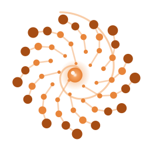
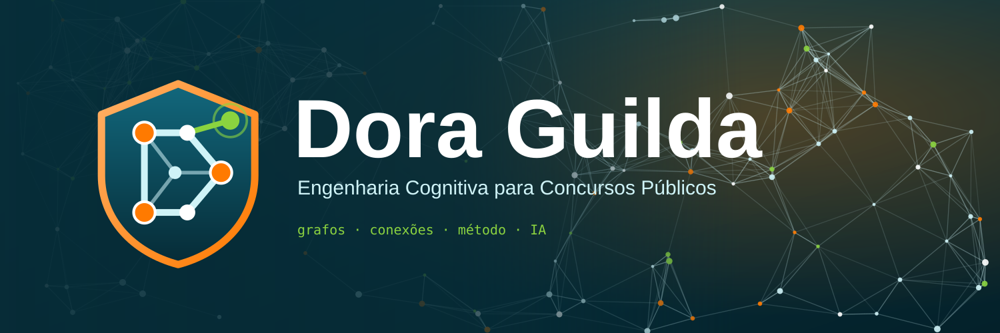
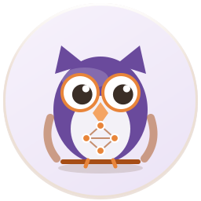
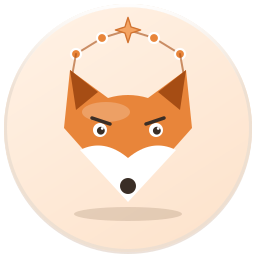
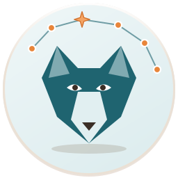
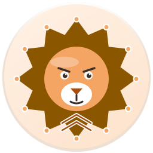
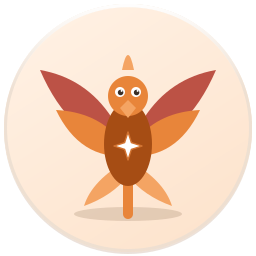
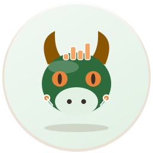

Dora Guilda · identidade visual
D-Grafo
Um D feito de nós e arestas de grafo, com um cérebro orgânico no centro de onde saem as conexões: estudo como rede de ideias. Cores e relevo iguais aos do Dora Draw. Os ícones herdam a cor do tema.
Marca e logo


marca.svg · logo.svg · logo-claro.svg


Capa


Ícones dos módulos
Mascotes das patentes






Aprendiz, Escudeiro, Cavaleiro, Mestre, Arquimestre e Lenda: quanto mais alta a patente, mais nós e conexões no brasão.